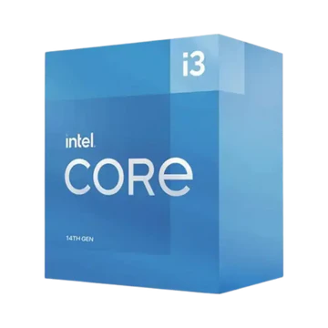
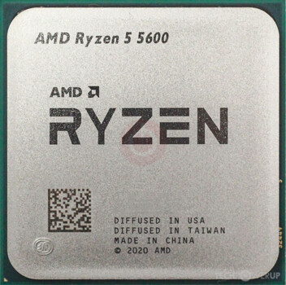

Processador
O processador é o componente
responsável por executar tarefas, cálculos e controlar praticamente tudo
no computador. Escolher
a CPU certa faz diferença no desempenho em jogos,
edição de vídeo, programação, multitarefa e uso diário.
O processador é o componente
responsável por executar tarefas, cálculos e controlar praticamente tudo
no computador. Escolher
a CPU certa faz diferença no desempenho em jogos,
edição de vídeo, programação, multitarefa e uso diário.
4-6 cores: Básico e jogos leves.
6-8 cores: Jogos atuais e produtividade.
10+ cores: Edição e profissional.
A frequência indica a velocidade do processador.
Frequências maiores geralmente oferecem respostas mais rápidas em jogos e tarefas do dia a dia.
O cache funciona como uma memória ultrarrápida interna da CPU. Mais cache pode melhorar bastante o desempenho.
Processadores mais potentes consomem mais energia e precisam de refrigeração melhor.

4 núcleos / 8 threads
Ideal para tarefas básicas do dia a dia, estudos e jogos bem leves.

6 núcleos / 12 threads
O melhor custo-benefício para jogos atuais e produtividade intermediária.